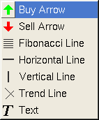
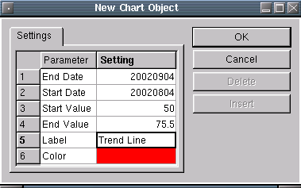

Create a new chart object for display. A chart object a applies to either the main chart or indicator plot areas.
Selecting New Chart Object will bring up a dialog that asks you to choose from the list of chart object types.
After selecting a chart object, the edit chart object dialog will be displayed. All of the parameters that apply to the chart object can be edited here. To change a setting, just click on the setting box and either a dialog will pop up or you may edit the value directly in the box.
